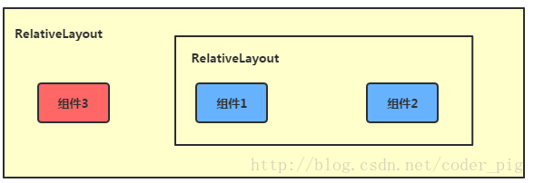
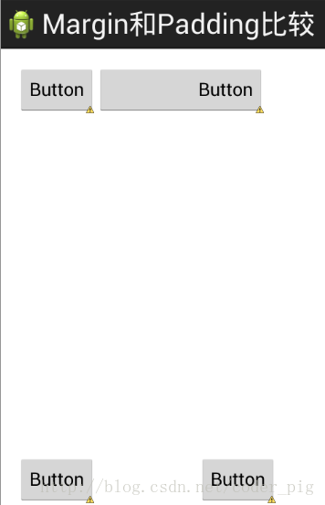

この節のはじめに
前の節ではLinearLayoutについて詳しく解説しました。LinearLayoutは私たちがよく使うレイアウトの一つでもあります。私たちはより多くの場合、そのweight（重み）属性を好みます。等比率で分割するため、画面の適合にかなり役立ちます。しかし、LinearLayoutを使用する際には問題もあります。それは、界面が複雑な場合、LinearLayoutを多層にネストする必要があり、これによりUI Renderの効率（レンダリング速度）が低下します。また、listviewやGridViewのitemであれば、効率はさらに低くなります。さらに、LinearLayoutのネストが多すぎると、より多くのシステムリソースを占有し、stackoverflowを引き起こす可能性もあります。しかし、RelativeLayoutを使用すれば、わずか1つのレイヤーで完了できるかもしれません。親コンテナまたは兄弟コンポーネントを基準に、margin + paddingを使ってコンポーネントの表示位置を設定できるので、便利です！もちろん、絶対のなものではなく、ケースバイケースで分析しましょう！まとめると次の通りです：できるだけRelativeLayout + LinearLayoutのweight属性を組み合わせて使用するようにしましょう！
1. コア属性図

2. 親コンテナ配置属性の概略図

3. 兄弟コンポーネントによる配置
ええと、まず兄弟コンポーネントとは何かを説明しましょう。いわゆる兄弟コンポーネントとは、同じ階層のコンテナ内にあるコンポーネントのことです。図のとおりです。

図のコンポーネント1と2は兄弟コンポーネントです。しかし、コンポーネント3はコンポーネント1や2とは兄弟コンポーネントではないため、コンポーネント3はコンポーネント1や2を通じて配置することはできません。例えば、layout_toleftof = "コンポーネント1"のようにするとエラーになります！必ず覚えておいてください！この兄弟コンポーネントによる配置の最も古典のな例は「梅花レイアウト」です。以下にコードで実装します：
実行結果図：

実装コード：
<RelativeLayout xmlns:android="http://schemas.android.com/apk/res/android"
xmlns:tools="http://schemas.android.com/tools"
android:id="@+id/RelativeLayout1"
android:layout_width="match_parent"
android:layout_height="match_parent" >
<!-- 这个是在容器中央的 -->
<ImageView
android:id="@+id/img1"
android:layout_width="80dp"
android:layout_height="80dp"
android:layout_centerInParent="true"
android:src="@drawable/pic1.html"/>
<!-- 在中间图片的左边 -->
<ImageView
android:id="@+id/img2"
android:layout_width="80dp"
android:layout_height="80dp"
android:layout_toLeftOf="@id/img1"
android:layout_centerVertical="true"
android:src="@drawable/pic2.html"/>
<!-- 在中间图片的右边 -->
<ImageView
android:id="@+id/img3"
android:layout_width="80dp"
android:layout_height="80dp"
android:layout_toRightOf="@id/img1"
android:layout_centerVertical="true"
android:src="@drawable/pic3.html"/>
<!-- 在中间图片的上面-->
<ImageView
android:id="@+id/img4"
android:layout_width="80dp"
android:layout_height="80dp"
android:layout_above="@id/img1"
android:layout_centerHorizontal="true"
android:src="@drawable/pic4.html"/>
<!-- 在中间图片的下面 -->
<ImageView
android:id="@+id/img5"
android:layout_width="80dp"
android:layout_height="80dp"
android:layout_below="@id/img1"
android:layout_centerHorizontal="true"
android:src="@drawable/pic5.html"/>
</RelativeLayout>
4. marginとpaddingの違い
初心者はこの2つの属性に少し混乱するかもしれません。ここで区別しましょう：まずmarginはオフセットを表します。例えば、marginleft = "5dp"は、コンポーネントがコンテナの左端から5dpオフセットしていることを示します。一方、paddingはフィルを表し、その対象はコンポーネント内の要素、例えばTextViewのテキストです。例えば、TextViewにpaddingleft = "5dp"を設定すると、コンポーネント内の要素の左側に5dpのスペースが埋め込まれます。marginはコンテナ内のコンポーネントを対象とし、paddingはコンポーネント内の要素を対象とします。区別してください！以下、簡単なコードで両者の違いを示します：
比較用のサンプルコードは次のとおりです：
<RelativeLayout xmlns:android="http://schemas.android.com/apk/res/android"
xmlns:tools="http://schemas.android.com/tools"
android:layout_width="match_parent"
android:layout_height="match_parent"
android:paddingBottom="@dimen/activity_vertical_margin"
android:paddingLeft="@dimen/activity_horizontal_margin"
android:paddingRight="@dimen/activity_horizontal_margin"
android:paddingTop="@dimen/activity_vertical_margin"
tools:context=".MainActivity" >
<Button
android:id="@+id/btn1"
android:layout_height="wrap_content"
android:layout_width="wrap_content"
android:text="Button"/>
<Button
android:paddingLeft="100dp"
android:layout_height="wrap_content"
android:layout_width="wrap_content"
android:text="Button"
android:layout_toRightOf="@id/btn1"/>
<Button
android:id="@+id/btn2"
android:layout_height="wrap_content"
android:layout_width="wrap_content"
android:text="Button"
android:layout_alignParentBottom="true"/>
<Button
android:layout_marginLeft="100dp"
android:layout_height="wrap_content"
android:layout_width="wrap_content"
android:text="Button"
android:layout_toRightOf="@id/btn2"
android:layout_alignParentBottom="true"/>
</RelativeLayout>
実行結果図の比較：

5. よく使うポイント: marginは負の値に設定できる
多くの方がご存じないかもしれませんが、普段marginを設定するときは正の数に慣れていますが、実際には負の数も使えます。以下に簡単なプログラムでデモンストレーションします。ソフトウェアに入った後に広告ページがポップアップする状況をシミュレートし、右上隅のcancleボタンのmarginには負の数を使用しています！
効果図は次のとおりです：

広告のActivityのレイアウトコードを掲載します。もちろん、これに興味があればデモをダウンロードしても構いません。単に効果を実現しているだけなので、コードは少々粗い部分があります！
<RelativeLayout xmlns:android="http://schemas.android.com/apk/res/android"
xmlns:tools="http://schemas.android.com/tools"
android:layout_width="match_parent"
android:layout_height="match_parent"
tools:context="com.jay.example.relativelayoutdemo.MainActivity"
android:background="#00CCCCFF">
<ImageView
android:id="@+id/imgBack"
android:layout_width="200dp"
android:layout_height="200dp"
android:layout_centerInParent="true"
android:background="@drawable/myicon" />
<ImageView
android:id="@+id/imgCancle"
android:layout_width="28dp"
android:layout_height="28dp"
android:layout_alignRight="@id/imgBack"
android:layout_alignTop="@id/imgBack"
android:background="@drawable/cancel"
android:layout_marginTop="-15dp"
android:layout_marginRight="-10dp" />
</RelativeLayout>
この節のまとめ：
RelativeLayoutの詳しい解説はここまでです。何か落ち度、誤り、良い提案があれば、ぜひお聞かせください。最後に、上記のデモコードを皆さんがダウンロードできるように提供します：RelativeLayoutDemo